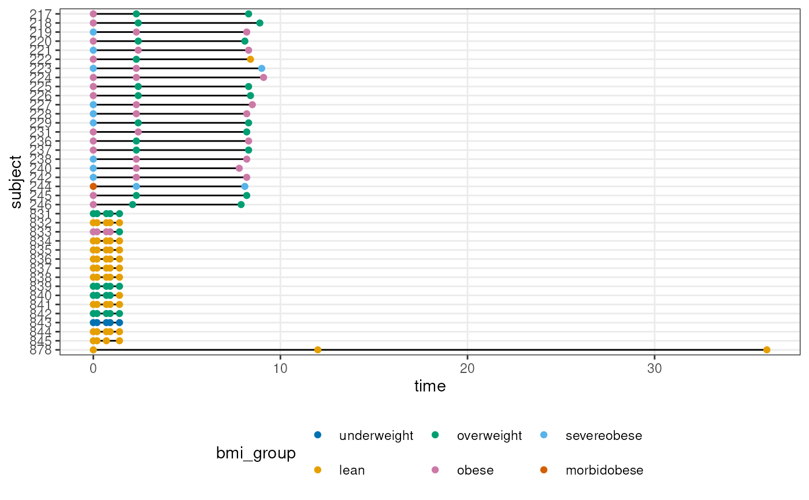
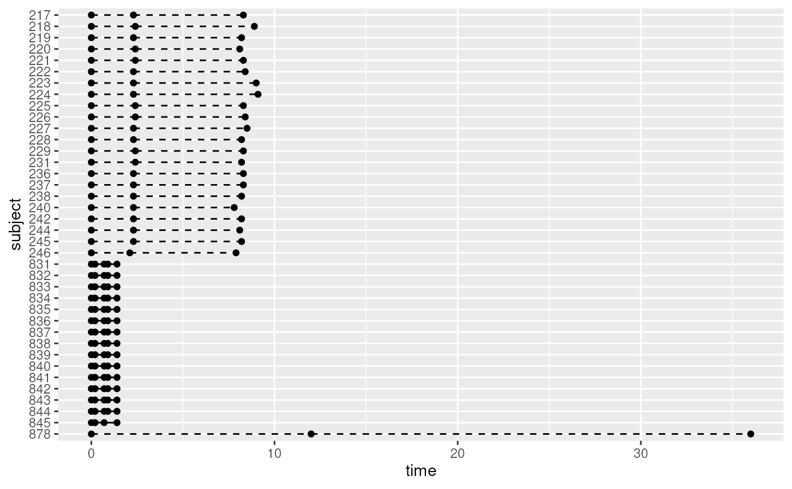
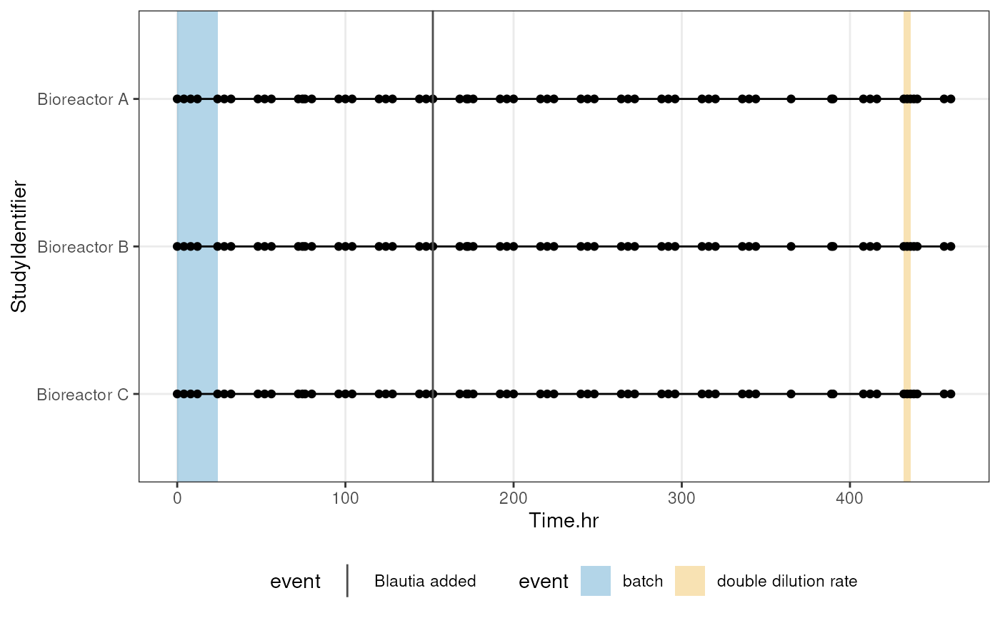
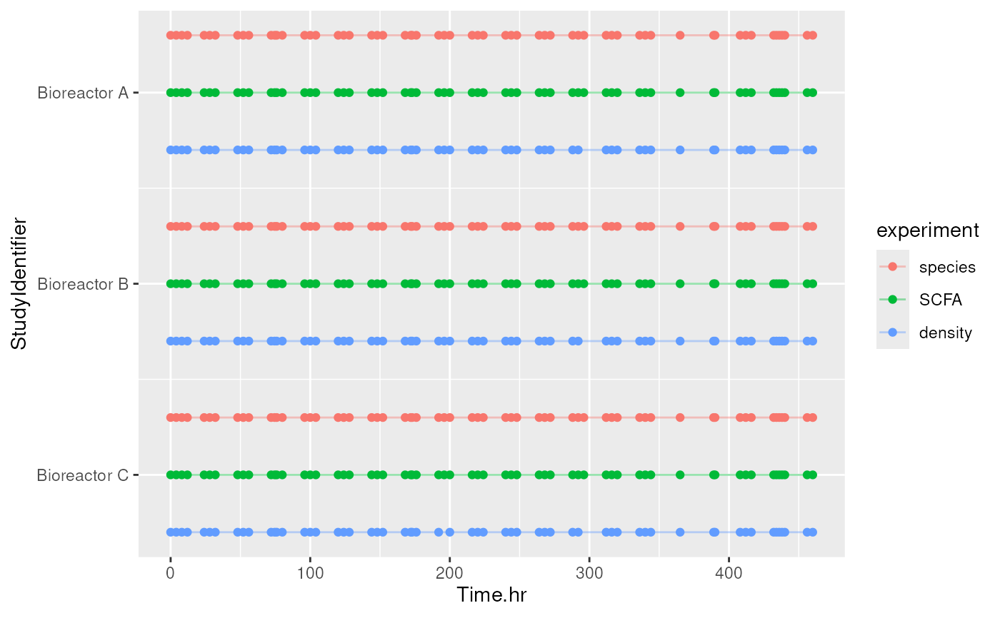

plotSwimmer() draws one row per subject with time on the x axis
and one point per sample. A lane joins the samples of each subject.
Usage
plotSwimmer(x, ...)
# S4 method for class 'SummarizedExperiment'
plotSwimmer(
x,
time.col,
group,
colour.by = NULL,
order.by = c("first", "n"),
max.gap = NULL,
missing = c("break", "show", "drop"),
events = NULL,
...
)
# S4 method for class 'MultiAssayExperiment'
plotSwimmer(x, time.col, group, order.by = c("first", "n"), ...)Arguments
- x
a
SummarizedExperimentorMultiAssayExperimentobject. For aMultiAssayExperiment,time.colandgroupare columns of itscolData, and each subject row has one band per experiment that marks the samples it contains.- ...
additional arguments passed to
geom_point.- time.col
Character scalar. Specifies the column fromcolData(x)that contains sampling times: numeric,Date,POSIXctor a factor of visits. Time differences, as inmax.gap, are in days forDateand hours forPOSIXcttimes.- group
Character scalar. Specifies the column fromcolData(x)that identifies subjects.- colour.by
Character scalar. Specifies the column fromcolData(x)that colours the points. (Default:NULL)- order.by
Character scalar. Orders subjects by their first sampling time ("first") or by number of samples, most first ("n"). Ties keep the order ofgroup. The first subject is at the top. (Default:"first")- max.gap
Numeric scalar. Breaks a lane where consecutive samples of a subject are further apart than this, intime.colunits. For visits,NULLbreaks lanes at visits without a sample; otherwiseNULLnever breaks lanes. (Default:NULL)- missing
Character scalar. How to draw missing samples: break the lane ("break"), join the samples around them with a dashed line and mark missed visits with open circles ("show"), or remove subjects with any missing sample ("drop"). (Default:"break")- events
data.frame. Events to draw, one per row, with columnsstart, and optionallyend,labeland thegroupcolumn.startandendhave the type oftime.col; for visits, they are visit levels. Events with anendare drawn as bands, the others as markers. Events with a subject in thegroupcolumn are drawn on the row of that subject; the others span all subjects.labelsets the fill of bands and markers on a row and the line type of markers that span all subjects. (Default:NULL)
Details
Numeric and Date times are drawn on a continuous axis. Visits are
drawn in level order, including levels without samples. Above 60
subjects, subject labels are hidden.
For visits, a sample is missing when a subject has no sample at a visit
after its first one, including visits after its last sample (dropout).
For numeric and Date times, a gap longer than max.gap is
missing; missing = "show" and "drop" then require
max.gap.
Examples
data("hitchip1006", package = "miaTime")
tse <- hitchip1006
tse <- tse[, tse$subject %in% names(which(table(tse$subject) >= 3))]
plotSwimmer(tse, time.col = "time", group = "subject",
colour.by = "bmi_group")

# Mark gaps longer than a year
plotSwimmer(tse, time.col = "time", group = "subject", max.gap = 1,
missing = "show")

# Perturbations of three bioreactors run on the same schedule
data("minimalgut", package = "miaTime")
tse <- minimalgut
events <- data.frame(
start = c(0, 152, 432),
end = c(24, NA, 436),
label = c("batch", "Blautia added", "double dilution rate"))
plotSwimmer(tse, time.col = "Time.hr", group = "StudyIdentifier",
events = events)

# Which samples have species counts, short-chain fatty acids and
# optical density
cd <- SummarizedExperiment::colData(tse)
od <- !is.na(cd$OpticalDensity)
mae <- MultiAssayExperiment::MultiAssayExperiment(
experiments = list(
species = tse,
SCFA = SummarizedExperiment::SummarizedExperiment(
t(as.matrix(cd[, c("Acetate", "Butyrate", "Propionate")]))),
density = SummarizedExperiment::SummarizedExperiment(
t(as.matrix(cd[od, "OpticalDensity", drop = FALSE])))),
colData = cd)
plotSwimmer(mae, time.col = "Time.hr", group = "StudyIdentifier")
